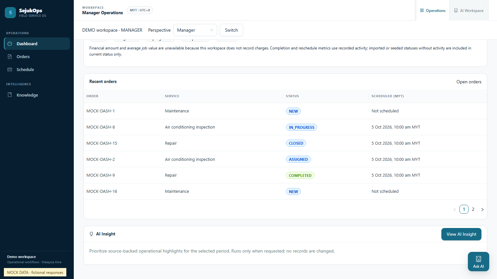
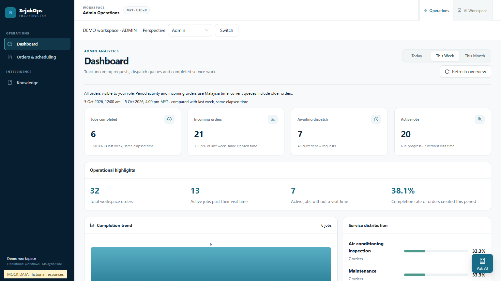
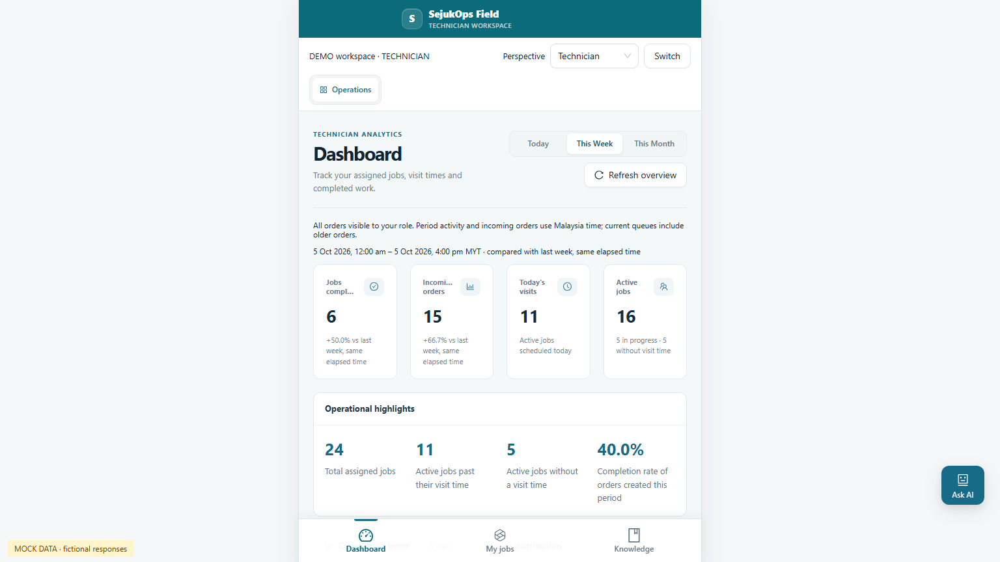
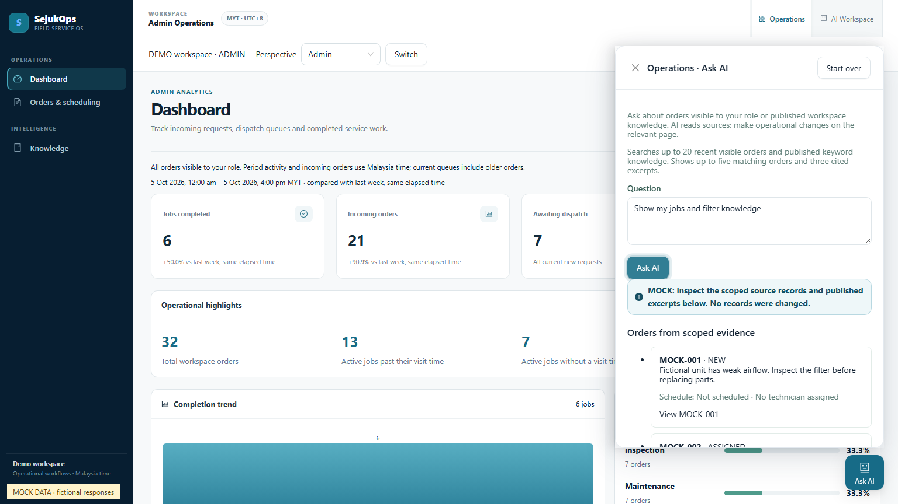
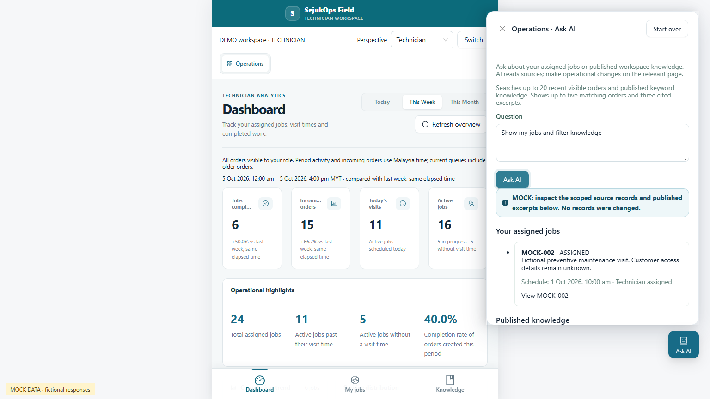

Operations spacing & unified Ask AI
SejukOps · 6 October 2026. Dashboard cards have separate, consistent gaps. Guest perspective uses an Ant Design Select. The fixed Ask AI panel accepts a single question about orders, published knowledge, or both.
Screenshot scope: Mock only. All pictures below use actual product components with fictional local MSW data. They are layout evidence, not real provider, database, staff-login or human UAT evidence.
Role access
| Role | Orders | Knowledge |
|---|
| Admin / Manager | Current workspace orders visible to the resolved actor | Published documents in the current workspace |
| Technician | Only jobs assigned to that technician | Published documents in the current workspace |
| Owner perspective preview | Read-only manual preview | AI requests denied in preview |
Operations Ask AI is a bounded read assistant. It reads up to 20 recent visible orders, presents up to five selected orders and three exact cited excerpts. It does not execute actions. AI Workspace retains its separate proposal and approval flow.
Dashboard spacing
Desktop/tablet gaps: 20 px. Mobile gaps: 16 px. Measured across all three roles at 1536×864, 1024×768 and 390×844; no page overflow or clipped KPI comparison text.
Manager · desktop overview. The Ant Design Perspective Select retains the explicit Switch action.

Manager · lower dashboard sections.

Admin · desktop overview.

Technician · assigned-job dashboard.
One question, two source types
Users do not choose an Orders / Knowledge topic first. The same input supports either source or a mixed question. The drawer overlays the portal; it does not compress the main content.

Admin · one mixed question, scoped orders and published excerpts. Fictional Mock response.

Technician · the same interaction with assigned jobs only. Fictional Mock response.
Mobile
Evidence
Formal employee login was not rerun in this slice. Human UAT: NOT_REPORTED. This gallery does not claim universal semantic recall or historical-order coverage.